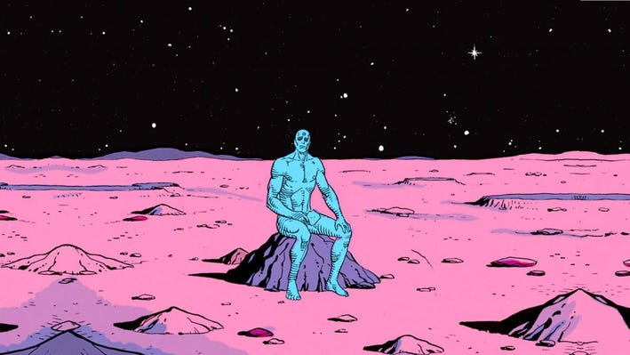
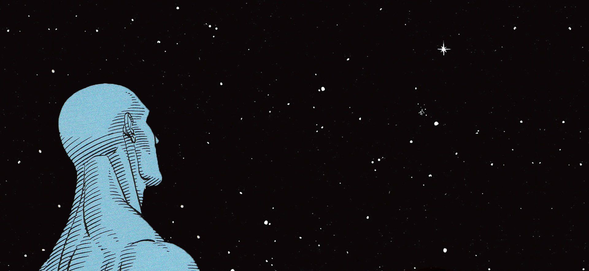
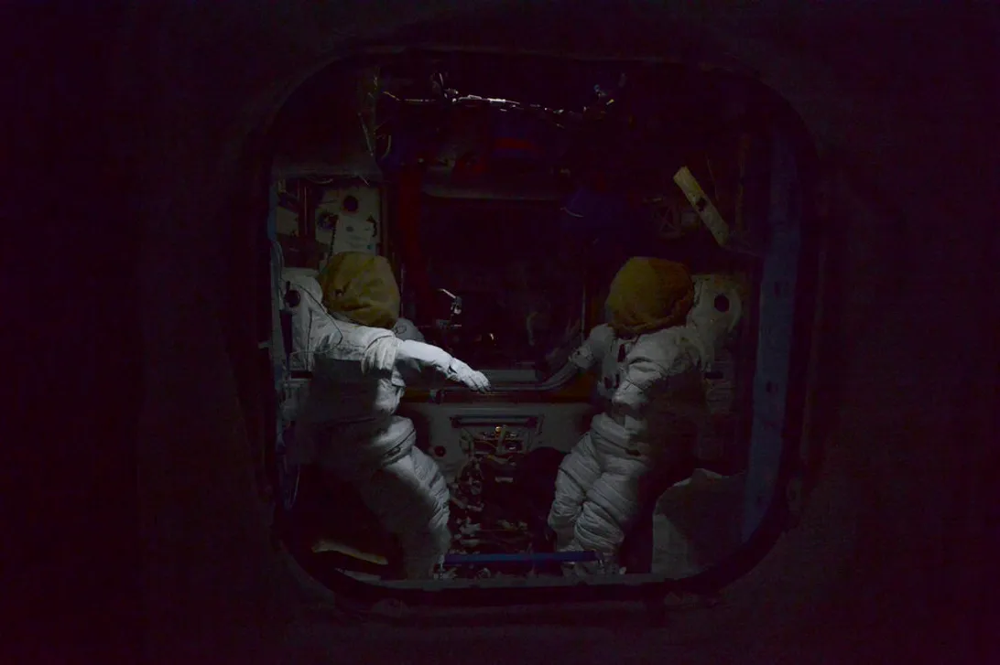
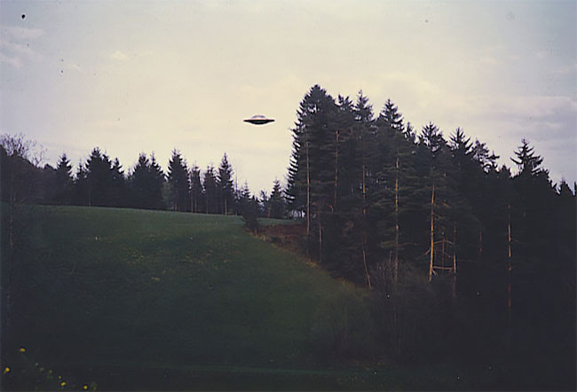
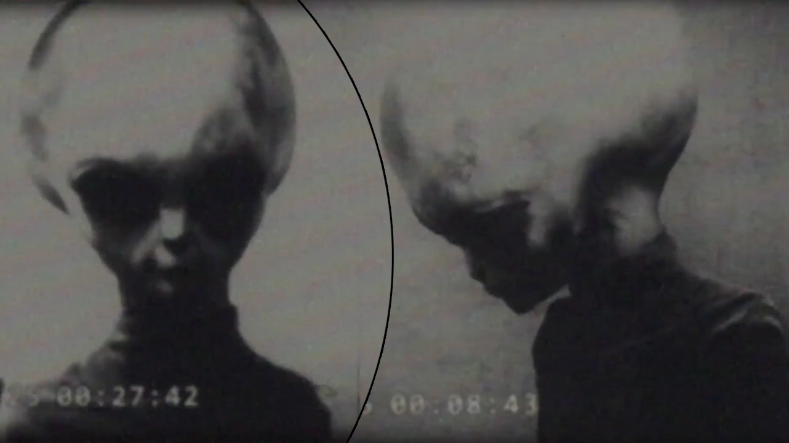

Are we really alone?
Do you Feel Safe?

There is no hint that help will come from elsewhere to save us from ourselves."
"All that moves is easily heard in the void, we will listen for you..."
“The universe is a dark forest. Every civilization is an armed hunter stalking through the trees like a ghost,
gently pushing aside branches that block the path and trying to tread without sound.
Even breathing is done with care.
The hunter has to be careful, because everywhere in the forest are stealthy hunters like him.
If he finds other life another hunter, an angel or a demon, a delicate infant or a tottering old man,
a fairy or a demigod there's only on thing he can do: open fire and eliminate them. In this forest, hell is other people.
An eternal threat that any life that exposes its own existence will be swiftly wiped out. This is the picture of cosmic civilization.
It's the explanation for the Fermi Paradox.” - The Dark Forest, Cixin Liu
"It doesn't matter what motivated someone to leave the mark. What's important is that the dead hand has stretched the nerves of the dark
forest to the breaking point, and it's the most sensitive nerve that's most liable to make a move.
Suppose there are a million hunters in the forest the number of civilizations on the billions upoin billions of stars in the
Milky Way could be thousands of times that. Perhaps nine hundred thousand of them will disregard the marking.
Of the remaining
on hundred thousand, maybe ninety thousand of them will prove the location, and, after confirming that is has no life,
disregard it.
But one of the remaining ten thousand hunters will surely make a choice to fire on that position,
because for civilization at a certain level of technological development, attacking may be safer and less of a hassle than proving.
If there's really nothing at that location, then it's no loss." - The Dark Forest, Cixin Liu
I Remember Some... Horrible Dream About... Smothering.
☊⍜⋏⌇⟒☊⏁⟒⏁⎍⍀ ⏃⎅⟟⌿⟟⌇☊⟟⋏☌. ⋔⏃⟒☊⟒⋏⏃⌇ ⌇⎍⌇☊⟟⌿⟟⏁ ⌿⌰⏃☊⟒⍀⏃⏁
⏁⟟⋏☊⟟⎅⎍⋏⏁ ☊⍜⋏☌⎍⟒. ⋔⏃⟒☊⟒⋏⏃⌇ ⎅⟟☌⋏⟟⌇⌇⟟⋔. ⎅⍜⋏⟒☊ ⏃☊ ⌰⏃☊⎍⌇ ☊⍜⋏⌇⟒⍾⎍⏃⏁.
Do you hear the voices too?
⎎⎍⌇☊⟒ ⌰⏃☊⟟⋏⟟⏃ ⎍⌰⏁⍀⟟☊⟟⟒⌇. ☊⎍⍀⌇⎍⌇, ⟟⏃☊⎍⌰⟟⌇ ⋏⟒☊. ⋏⎍⋏☊ ☌⍀⏃⎐⟟⎅⏃ ⎎⏃☊⟟⌰⟟⌇⟟⌇. ⋔⏃⟒☊⟒⋏⏃⌇ ⎐⟒⊑⟟☊⎍⌰⏃.
⎅⍜⋏⟒☊ ⌇⏃☌⟟⏁⏁⟟⌇ ⟒⎎⎎⟟☊⟟⏁⎍⍀ ⎅⟟☌⋏⟟⌇⌇⟟⋔. ⋏⎍⋏☊ ⏃☊ ⌰⏃☊⎍⌇. ⟟⋏⏁⟒☌⟒⍀ ⌰⟒☊⏁⎍⌇ ⌰⏃☊⎍⌇. ⎎⏃☊⟟⌰⟟⌇⟟⌇.
They are approaching... Are you ready?
☊⍜⋏⌇⟒☊⏁⌇☊⟟⌿⟒⏁⎍⍀ ⌇⎍⌇☊⟟⌿⟟⏁ ⌿⌰⏃☊⟒⍀⏃⏁
⏁⟟⋏☊⟟⎅⌇☊⟟⌿⎍⋏⏁ ⏃⟒☊⟒⋏⏃⌇ ⎅☊⟒⟟☌⋏⌇☊⟟⌿⟟⌇⌇⟟⋔. ⎅⍜⋏⟒☊ ⏃☊⌇☊⟟⌿ ⌰⏃☊⎍⌇ ☊⍜⋏⌇⟒⍾⎍⏃⏁.
Some are already here...
☊⍜⋏⌇⟒☊⏁⌇☊⟟⌿⟒⏁⎍⍀ ⌇⎍⌇☊⟟⌿⟟⏁ ⌿⌰⏃☊⟒⍀⏃⏁
⏁⟟⋏☊⟟⎅⌇☊⟟⌿⎍⋏⏁ ⏃⟒☊⟒⋏⏃⌇ ⎅☊⟒⟟☌⋏⌇☊⟟⌿⟟⌇⌇⟟⋔. ⎅⍜⋏⟒☊ ⏃☊⌇☊⟟⌿ ⌰⏃☊⎍⌇ ☊⍜⋏⌇⟒⍾⎍⏃⏁.